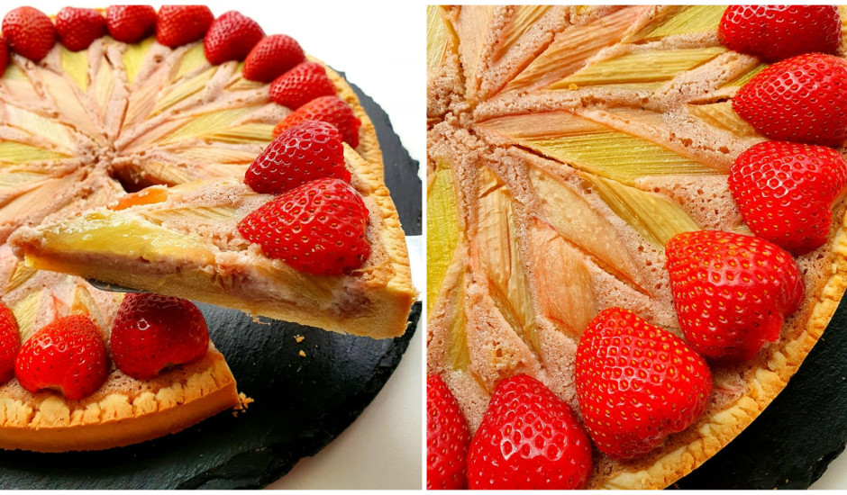

Torte
Zemenes un rabarberi - vasaras laika, iespējams, skaistākais tandēms.
Sastāvdaļu daudzums paredzēta formai 26-28 cm
Receptes un foto autore: Aina Pitrāne
Mīklai:
- 210 g miltu
- 120 g sviesta
- 70 g pūdercukura
- 45 g olu dzeltenumu
- 2 g sāls
Krēmam:
- 2 olas
- 60 g sviesta
- 60 g pūdercukura
- 14 g kukurūzas vai kartupeļu cietes
- 00 g zemeņu
1
- 80 g mandeļu miltu
Dekoram:
- 3-4 rabarberi
- Vēl zemenes

Pagatavošanas:
- Sākumā pagatavo mīklu. Istabas temperatūras sviestu saputo kopā ar pūdercukuru. Pievieno olu dzeltenumus un turpina kult. Beigās ieber miltus un sāli. Samīca mīklu un uz kādam 30 min. atstāj ledusskapī atpūsties.
- Kamēr mīkla atpūšas, pagatavo krēmu. Istabas temperatūras sviestu saputo kopā ar pūdercukuru. Pievieno olas un turpina kult. Pēc tam ieber cieti un mandeļu miltus, labi izmaisa. Beigās pievieno klāt sablendētas zemenes.
- Visu labi samaisa.
- Ņem cepamo formu un ar pirkstu palīdzību izlīdzina mīklu, veidojot arī maliņas. Sadursta ar dakšiņu mīklu un liek cepties iepriekš uzkarsētā cepeškrāsnī 170°C uz kādām 10 min.
- Pēc tam pievieno krēmu.
- Un dekorē ar rabarberiem.
- Liek atpakaļ cepeškrāsnī uz kādām 40-45 min.
- Izceptu var dekorēt vēl ar svaigām zemenēm.
- Lai labi garšo!